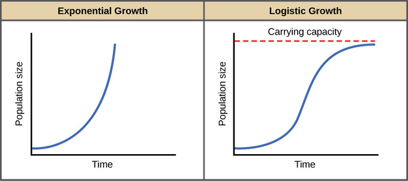
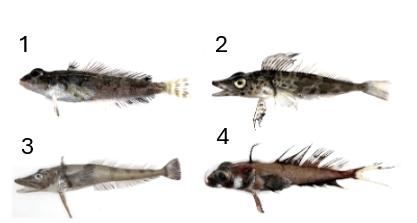
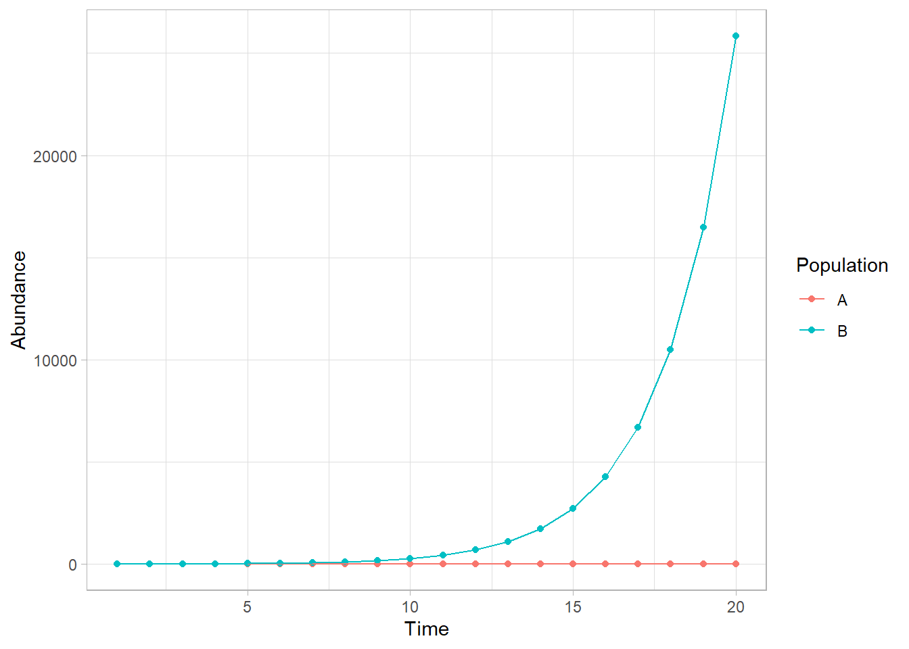
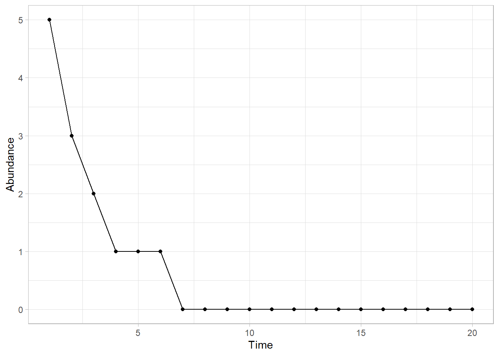
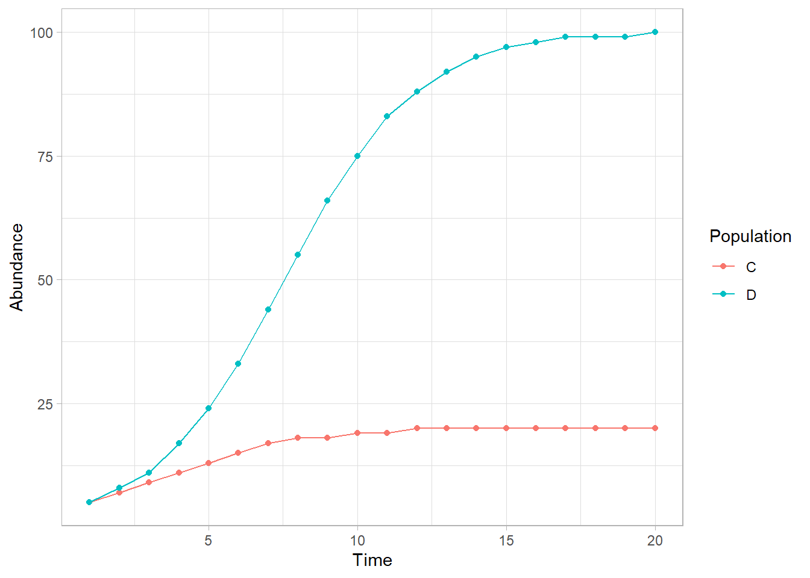

# Write your code here5.1: Population Growth
Introduction to Population Growth
Learning Outcomes
- Students will be able to distinguish between exponential and logistic population growth models.
- Students will be able to interpret the intrinsic rate of increase (
r) and carrying capacity (K) and explain their ecological significance. - Students will be able to use
filter()andggplot2to explore and visualize population data. - Students will be able to evaluate which fish population characteristics make a population a sustainable fishing target.
Let’s use descriptive statistics and data visualization to better understand population dynamics.
Exponential Growth
A population that shows exponential growth has a growth rate that depends on the average number of births (b) and deaths (d) per individual.
We call rates that are averages per individual in a population (rather than a total) per capita growth rates; per capita translates from Latin to “by head,” meaning for individuals.
Combined, birth and death rates can be described as the intrinsic rate of increase (r). We calculate r by subtracting the number of individuals that are removed from the population (deaths) from the number of individuals that are joining the population (births): \(r = b - d\).
We can calculate by how many individuals the population will change in a given time period (N) by multiplying the starting population size (Ni) by the intrinsic rate of increase (r) using this equation:
Logistic Growth
Populations that show logistic growth start out in the same way as populations with exponential growth, driven by per capita birth and death rates.
After a while, though, limited resources also start to come into play. When calculating the change in the size of the population (N), we also need to take into account the maximum number of individuals the population can sustainably support, called the carrying capacity, K.
We use the following equation to calculate the population size:
Visualizing Growth Models
As a reminder, this is what each type of population growth model looks like:

What Population Factors Matter?
We still need to figure out what fish population we will target for Antarctica.
Briefly, let’s consider what we think might be important for sustainability.
- Large population
- Stable population (i.e., not declining)
Fish Data
Let’s look at fish data from around our station in Antarctica over the past 20 years to get a better feel for how different population factors impact fish populations. These fish moved into the bay by our station when we established it, so we know the populations started at around the same time and had the same starting populations.
These aren’t necessarily our targets for fishing, particularly since it would be difficult and potentially disruptive to fish in the bay. Right now our goal is just to learn so we know what to look for when we are making our decision to conduct sustainable fishing.

As always, first we load the tidyverse and read in the data: “fish_pops.csv” as fish_pops.
Answer:
library(tidyverse)── Attaching core tidyverse packages ──────────────────────── tidyverse 2.0.0 ──
✔ dplyr 1.2.1 ✔ readr 2.2.0
✔ forcats 1.0.1 ✔ stringr 1.6.0
✔ ggplot2 4.0.3 ✔ tibble 3.3.1
✔ lubridate 1.9.5 ✔ tidyr 1.3.2
✔ purrr 1.2.2
── Conflicts ────────────────────────────────────────── tidyverse_conflicts() ──
✖ dplyr::filter() masks stats::filter()
✖ dplyr::lag() masks stats::lag()
ℹ Use the conflicted package (<http://conflicted.r-lib.org/>) to force all conflicts to become errorsfish_pops <- read_csv("data/fish_pops.csv")Rows: 80 Columns: 6
── Column specification ────────────────────────────────────────────────────────
Delimiter: ","
chr (2): growth_type, population
dbl (4): N, year, r, carrying_capacity
ℹ Use `spec()` to retrieve the full column specification for this data.
ℹ Specify the column types or set `show_col_types = FALSE` to quiet this message.Largest Population
Which population grows the biggest? Let’s start by calculating some summary statistics of the data.
max_pop <- fish_pops %>%
group_by(population)%>%
summarise(max_N = max(N))
max_pop# A tibble: 4 × 2
population max_N
<chr> <dbl>
1 A 5
2 B 25834
3 C 20
4 D 100It looks like Population B grows the largest by far. Let’s learn more about Population B and filter out the data so we can look at it separately.
popB <- fish_pops %>%
filter(population == "B")
popB# A tibble: 20 × 6
N year growth_type r carrying_capacity population
<dbl> <dbl> <chr> <dbl> <dbl> <chr>
1 5 1 exponential 0.45 NA B
2 8 2 exponential 0.45 NA B
3 12 3 exponential 0.45 NA B
4 19 4 exponential 0.45 NA B
5 30 5 exponential 0.45 NA B
6 47 6 exponential 0.45 NA B
7 74 7 exponential 0.45 NA B
8 117 8 exponential 0.45 NA B
9 183 9 exponential 0.45 NA B
10 287 10 exponential 0.45 NA B
11 450 11 exponential 0.45 NA B
12 706 12 exponential 0.45 NA B
13 1107 13 exponential 0.45 NA B
14 1736 14 exponential 0.45 NA B
15 2723 15 exponential 0.45 NA B
16 4270 16 exponential 0.45 NA B
17 6697 17 exponential 0.45 NA B
18 10503 18 exponential 0.45 NA B
19 16472 19 exponential 0.45 NA B
20 25834 20 exponential 0.45 NA B What type of growth is the population exhibiting?
Why is there no carrying capacity in this population data set? What does this mean about the resources Population B needs?
Answers: - Growth type: exponential - No carrying capacity because exponential models assume unlimited resources. Population B is not yet limited by available resources.
Exponential Growth Populations
It looks like populations exhibiting exponential growth might be good targets for our fishing operations because they can become very large. Let’s look at the data we have on exponential growth populations a little closer.
Let’s filter out the exponential growth models to examine them.
exp_pops <-fish_pops %>%
filter(growth_type == "exponential")
exp_pops# A tibble: 40 × 6
N year growth_type r carrying_capacity population
<dbl> <dbl> <chr> <dbl> <dbl> <chr>
1 5 1 exponential -0.45 NA A
2 3 2 exponential -0.45 NA A
3 2 3 exponential -0.45 NA A
4 1 4 exponential -0.45 NA A
5 1 5 exponential -0.45 NA A
6 1 6 exponential -0.45 NA A
7 0 7 exponential -0.45 NA A
8 0 8 exponential -0.45 NA A
9 0 9 exponential -0.45 NA A
10 0 10 exponential -0.45 NA A
# ℹ 30 more rowsIt’s hard to see what’s happening with only the data frame. Let’s look at the exponential growth populations on the same plot:
ggplot(exp_pops, aes(x = year, y = N, color = population)) +
geom_point() +
geom_line()+
labs(x = "Time", y = "Abundance", color = "Population") +
theme_light()
It looks like Population B is very large, but Population A stays small. It’s hard to see what is happening on this plot because the scales are so different, so let’s look at what is happening with Population A by filtering out the data just for that population.
popA <-fish_pops %>%
filter(population == "A")
popA# A tibble: 20 × 6
N year growth_type r carrying_capacity population
<dbl> <dbl> <chr> <dbl> <dbl> <chr>
1 5 1 exponential -0.45 NA A
2 3 2 exponential -0.45 NA A
3 2 3 exponential -0.45 NA A
4 1 4 exponential -0.45 NA A
5 1 5 exponential -0.45 NA A
6 1 6 exponential -0.45 NA A
7 0 7 exponential -0.45 NA A
8 0 8 exponential -0.45 NA A
9 0 9 exponential -0.45 NA A
10 0 10 exponential -0.45 NA A
11 0 11 exponential -0.45 NA A
12 0 12 exponential -0.45 NA A
13 0 13 exponential -0.45 NA A
14 0 14 exponential -0.45 NA A
15 0 15 exponential -0.45 NA A
16 0 16 exponential -0.45 NA A
17 0 17 exponential -0.45 NA A
18 0 18 exponential -0.45 NA A
19 0 19 exponential -0.45 NA A
20 0 20 exponential -0.45 NA A What do you notice about Population A that is different than Population B?
Answer: The intrinsic growth rate (r) for Population A is negative.
The intrinsic rate of increase (r) for Population A is negative. Let’s see what that means for Population A and plot it by itself:
ggplot(popA, aes(x = year, y = N)) +
geom_point() +
geom_line()+
labs(x = "Time", y = "Abundance") +
theme_light()
What has happened to this population?
Answer: Population A crashes and reaches zero. A negative r means more individuals are dying than being born, so the population declines until it goes extinct.
Even with “exponential growth”, the population has crashed (gone to 0), because r is negative. It took approximately 7 years for this to happen.
Between Population A and Population B, which is a better target population for fishing? Why?
Answer: Population B: r > 0 and it grows quickly, meaning it can recover from harvesting pressure. Population A is already declining and would collapse under any additional pressure.
Logistic Growth Populations
Okay, so we can’t rely only on the type of growth as a way to make our fishing decisions. But, we’re still curious about our populations that are limited by resources (i.e., exhibiting logistic growth).
log_pops <- fish_pops %>%
filter(growth_type == "logistic")
log_pops# A tibble: 40 × 6
N year growth_type r carrying_capacity population
<dbl> <dbl> <chr> <dbl> <dbl> <chr>
1 5 1 logistic 0.45 20 C
2 7 2 logistic 0.45 20 C
3 9 3 logistic 0.45 20 C
4 11 4 logistic 0.45 20 C
5 13 5 logistic 0.45 20 C
6 15 6 logistic 0.45 20 C
7 17 7 logistic 0.45 20 C
8 18 8 logistic 0.45 20 C
9 18 9 logistic 0.45 20 C
10 19 10 logistic 0.45 20 C
# ℹ 30 more rowsNotice in this case we have carrying capacity data. Let’s use some data visualizations to help us understand what that means.
Let’s look at the two logistic growth populations on the same plot:
ggplot(log_pops, aes(x = year, y = N, color = population))+
geom_point() +
geom_line()+
labs(x = "Time", y = "Abundance", color = "Population")+
theme_light()
Which population gets the largest?
Answer: Population D.
Finding the Carrying Capacity
When we have a logistic growth model, we often will want to find the carrying capacity of the population.
What values does each population level off at?
- Population C:
- Population D:
Answers: Pop C: 20 Pop D: 100 (carrying capacity (K) values in the data)
Which population do you think might be the best candidate to fish between these two?
Answer: Population D. It is more abundant and has a higher carrying capacity, meaning it can support more individuals and better withstand fishing.
A Review of What We Have Learned
The following factors are important to know about a population before fishing:
Exponential growth can result in bigger populations than logistic growth
Intrinsic rate of increase (
r) should not be negativeA higher carrying capacity means the population can take advantage of more resources to grow larger, which may indicate that the population is a better candidate for fishing
References
Golding, J.; Andersen, D.; Bledsoe, E. (2024). Data-Driven Decision-Making: Antarctic Fisheries. Teaching Ecology for All Undergraduate Audiences, QUBES Educational Resources. doi:10.25334/YECE-7M02
Zhang, M., Liu, S., Bo, J., Zheng, R., Hong, F., Gao, F., Miao, X., Li, H., & Fang, C. (2022). First evidence of microplastic contamination in Antarctic fish (Actinopterygii, Perciformes), Water, 14(19).